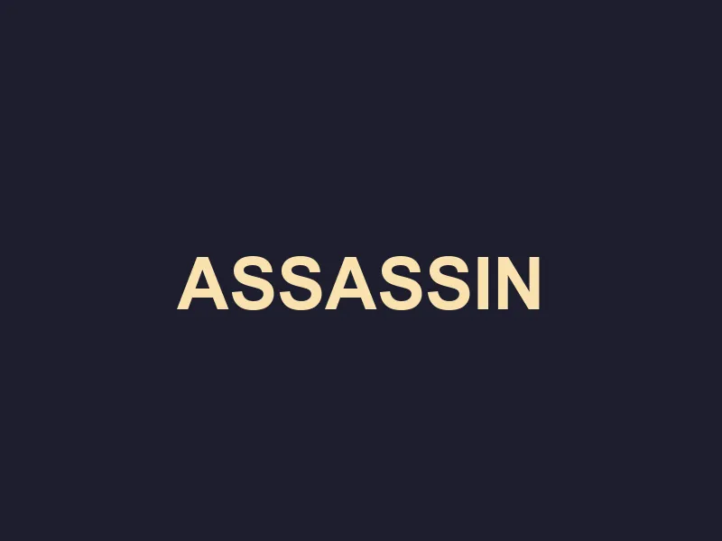

The Tithe of Blood
Sector: High Spire Chambers

The Governor is a puppet of Chaos. You find him in his private chambers, surrounded by dark artifacts. The truth must be silenced with cold steel.
End his heresy.
Try to reason with him.